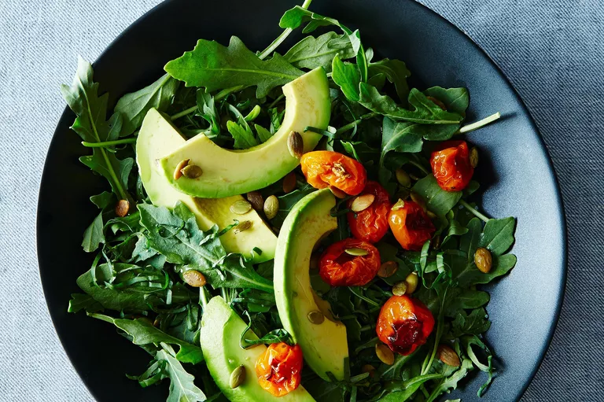

home
Avocado with Pomegranate Molasses, Tomatoes, Citrus, and Basil

Description
The bright citrus and tangy-sweet tomatoes are full of flavor, especially
when backed by the creamy richness of the avocado. Roast tomatoes until
they're caramelized and bursting, then add them to a bed of arugula topped
with a sliced avocado. Dress everything with a sweet and tangy combination
of citrus juice and pomegranate molasses. Top with basil for freshness and
pumpkin seeds for crunch.
Ingredients
- 1 cup sungold cherry tomatoes
- tablespoon grapeseed oil
- 1 tablespoon
- 1/2 teaspoon pomegranate molasses, divided
- Kosher salt
- 1 handful arugula
- 1 to 2 pink variegated lemons
- 1/2 lime, juiced
- 1 large avocado
- 1 small handful roasted and salted pepitas
- 2 to 3 fresh basil leaves, chiffonaded
Directions
- Heat oven to 400° F.
-
Place a piece of parchment on a baking sheet (line the pan with foil if
you're concerned about protecting it) and arrange the tomatoes in the
center. Pour the grapeseed oil and 1 tablespoon of the pomegranate
molasses over the tomatoes and rub them until they're well-coated.
Sprinkle with kosher salt. The molasses will pool on the baking sheet,
so be sure all of the tomatoes are swimming in that pool. Bake for 25 to
30 minutes, until tomatoes are beginning to burst and look a bit
caramel-y.
- Lay out a bed of arugula on your serving dish.
-
Combine the juice of the pink variegated lemons with the lime juice and
the remaining 1/2 teaspoon of pomegranate molasses in a small bowl. Set
aside for a moment.
-
Slice the avocado into large sections (I sliced mine lengthwise, because
that seemed sexier to me) and arrange them over the arugula. Sprinkle
slices with kosher salt.
-
Pour the citrus mixture over the avocado and arugula. Add tomatoes
straight from the oven so that they're still warm when you serve it. Top
with pepitas and chiffonaded basil.
- Take off your pants and enjoy!